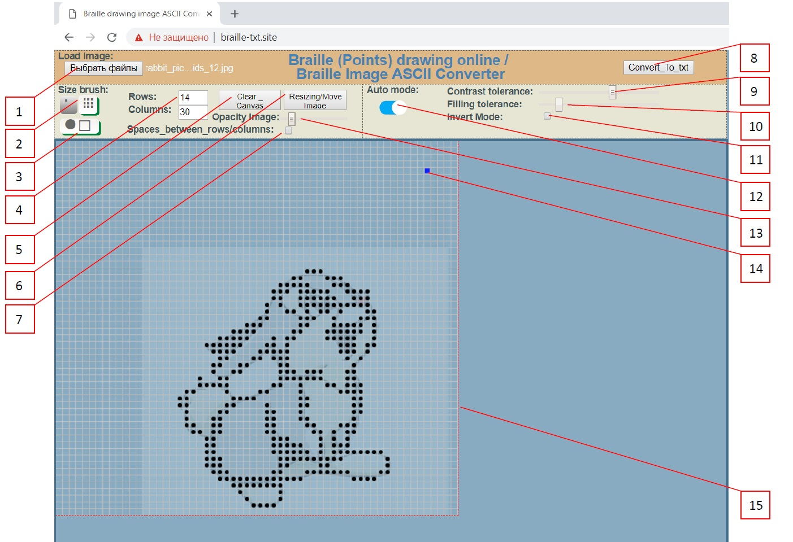

Введение
Данное веб-приложение изначально задумывалось как онлайн-конвертер рисунков в набор ASCII-символов таблицы Брайля (по своей форме и последовательности похожих на исходный рисунок), для Steam'a, youtub'a и других форумов.
Прежде чем приступить к его созданию, я пересмотрел немало программ-аналогов, позволяющих решить данную задачу.
Большинство из них представляют из себя небольшую утилиту, на подобии этой, которую вы скачиваете на компьютер, указываете ей путь к рисунку и получаете заветный результат.
Однако, если форум, очень требовательный к количеству символов (как Steam например), то вам придётся изрядно потрудится, чтобы получить рисунок приемлемого качества и, в то же время, небольших размеров. К тому же, если вы хотели бы немного вручную подредактировать результат (где-то несколько точек убрать, где-то немного добавить), то сделать это будет весьма сложно…
Я также пересмотрел некоторые (только бесплатные) программы из списка: https://www.indexbraille.com/en-us/support/braille-editors , но не одна из них не решает требуемую нам задачу (ну или я в чём-то не разобрался).
Из онлайновых (которые выполняются в браузере и не требуют скачивания подозрительных файлов на ваш компьютер) конверторов изображений в ASCII-символы Брайля я нашёл только такую: https://505e06b2.github.io/Image-to-Braille , но она также обладает вышеупомянутыми недостатками…
Если вы знаете другой хороший конвертер изображений Брайля, пожалуйста, напишите мне.
Проблема пробелов
Одна из проблем, которую полностью решить я так и не смог – это проблема пробелов. Дело в том, что разные шрифты воспринимают пробелы (как обычные, так и специальные). А ведь из-за этого ряды в итоговом наборе символов будут разъезжаться…
Поэтому было решено для шрифтов «Arial» использовать обычный и специальный (узкий) пробел, а для «Lucida Console» (блокнот Windows)) использовать специальный широкий пробел.
Если же ни один из вариантов вам не подходит, попробуйте заменить широкий пробел « » во втором (нижним) итоговом результате на какой-то из перечня (или их комбинацию), ну или на худой конец символом «⠄», как это сделано здесь.
Как этим пользоваться
На главной странице сайта вы видите примерно следующее:

Здесь «15» - это холст, на котором следует нарисовать разметку точками брайля.
Синий квадрат «14» указывает, в каком месте появится точка при нажатии мышки. По-умолчанию точка появляется при нажатии левой мыши, а стирается при нажатии правой мыши. Изменить этот порядок можно активировав копку «3».
Изменить размер кисти можно кнопкой «2».
Размеры холста можно изменить с помощью поля ввода «4». Здесь “Rows” определяет, сколько символов Брайля войдёт по вертикали, а “Columns” сколько символов Брайля войдёт по горизонтали холста.
Чтобы сделать холст более приближенным к txt-документу, вы можете поставить галочку «7». Тогда на холсте появятся межстрочные и межсимвольные отступы.
Кнопкой «5» вы можете удалить все нарисованные на холсте точки.
Чтобы загрузить произвольный рисунок со своего компьютера, нажмите кнопку «1».
После выбора рисунка, вы сможете перемещать и ресайзить его в пределах заданной сетки. При этом кнопка «6» будет активна (выделена красным цветом), что говорит о том, что вы не можете рисовать на холсте, покуда не определитесь с положением рисунка. После того, как подогнали размер и положение рисунка, нажмите кнопку «6», чтобы зафиксировать его положение и активировать режим рисования.
Прозрачность рисунка можно изменить ползунком «13».
Так же, после выбора рисунка вы сможете включить режим автоматической конвертации, переключив тумблер «12». В этом случае программа сама постарается заполнить холст точками таким образом, чтобы результат напоминал по форме ваш рисунок. Алгоритм закраски примерно следующий: программа исходит из того, что каждый квадратик имеет набор пикселей 10х10 (всего по 100 пикселей на каждую ячейку сетки). Каждый из этих пикселей обесцвечивается, и если его контрастность больше, чем заданная ползунком «9», то пиксель проходит по допуску контрастности. Затем программа подсчитывает, сколько пикселей для данной ячейки, прошло по допуску контрастности, и если это число больше, чем заданное ползунком «10», то ячейка будет закрашена точкой Брайля.
Если рисунок имеет альфа канал, то он обрабатывается так, что любое значение альфа-канала больше 0, считается как «чёрный пиксель», а полностью белый альфа канал (альфа = 0) игнорируется.
После того, как вы закончили обработку своего рисунка нажмите кнопку «8», чтобы получить результат в виде набора ASCII символов.
Обратная связь
Для обратной связи, пожалуйста, используйте e-mail « purple-pony@mail.ru ».